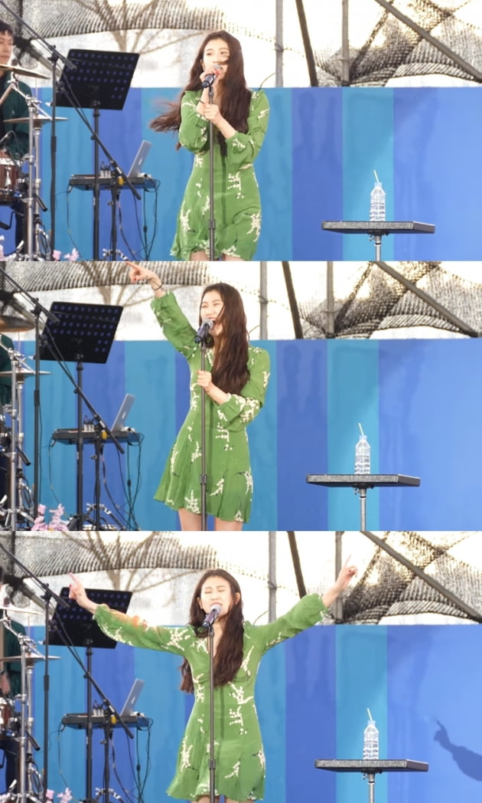

이슈 2019-12-11 백예린 'square' 전설의 시작은 유튜브…660만뷰 '초록원피스 라이브'
by 김예랑 / 한경닷컴 | Photos by 블루바이닐 전설의 시작은 유튜브였다. 백예린이 발매한 신곡 '스퀘어'(Square)의 이야기다.
2017년 유튜버 cyidra는 백예린의 미발표곡 '스퀘어'를 자신의 채널에 공개했다.
초록색 원피스를 입고 흥을 주체 못한채 춤을 추던 백예린의 모습은 보는 이들에게 설레임을 가득 선사했다. 그는 특유의 그루브와 섬세한 감정표현으로 리스너들의 귀를 사로잡았다.
이 영상은 조회수 660만을 기록해 화제를 모으기도 했다.
'스퀘어'는 백예린의 미발매 곡이라, 유튜브 등으로 밖에 들을 수 없었기에 유튜브 상에서 더욱 화제가 됐다. "1시간 내내 '스퀘어' 들으려고 유튜브 프리미엄 구매했다"는 네티즌도 있었다.
2년 뒤 '스퀘어'가 정규앨범으로 공개됐다.'스퀘어'는 팬들이 가장 '정발'(정규발매)를 원했던 곡이기도 하다. 네티즌들은 "잘 버텼다"며 토닥였다.
많은 팬들이 '스퀘어' 음원 발표를 애걸하기도 했다. 이에 백예린은 "다양한 음악을 하고 싶은 나에게 씁쓸하다"라며 "공연에서 그 노래를 부르지 않으면 실망하는 몇 관객들을 보며 집중할 수 없었다"고 털어놓으면서 팬 저격 논란에 휩싸이기도 했다.
2년 뒤 '스퀘어'가 정규앨범으로 공개됐다.'스퀘어'는 팬들이 가장 '정발'(정규발매)를 원했던 곡이기도 하다. 네티즌들은 "잘 버텼다"며 토닥였다.
백예린은 오랜 시간 끝에 지난 10일 첫 정규앨범 ‘Every Ietter I sent you.’을 공개했다. 타이틀곡은 바로 '스퀘어'였다.
해당 앨범은 음원차트를 휩쓸었고 '스퀘어' 또한 실시간 차트 1위를 기록했다.
백예린은 "한국인 최초 영어가사로 1등을 했다고 하는데 이런 건 자랑해도 되겠죠"라며 자부심을 드러냈다.
소속사 블루바이닐은 "이번 정규앨범은 총 18곡 중 17곡이 영문 가사"라며 "국내 가요 중 영문 가사곡이 실시간 차트 1위를 달성한 일은 최초"라고 설명했다.
백예린은 10살 때 SBS '놀라운 대회 스타킹'을 통해 10세 발라드 천재로 대중에 처음 등장했다. 이후 JYP 엔터테인먼트에 소속돼 박지민과 함께 듀오 15&로 가요계에 데뷔했다. 지난 9월 JYP와의 계약이 만료되고 홀로서기에 나섰다.